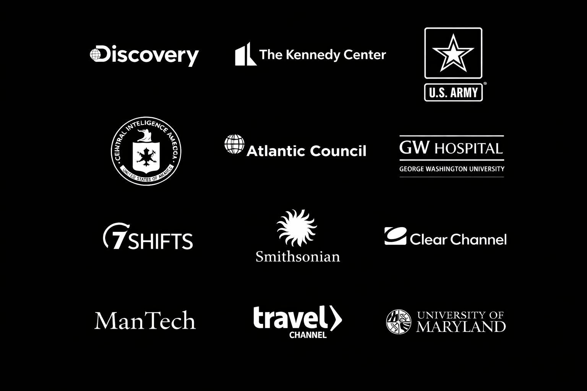

Highlights
The Kennedy Center (2006–Present)
- Senior Director, Multimedia — lead a 20+ person team delivering high-impact digital content.
- Produced/managed delivery for 5,000+ live events featuring world-renowned artists.
- Launched Digital Stage, an industry-recognized media brand for digital content delivery.
- Owned multimillion-dollar budgets and complex production operations, including AI-assisted production pipelines and VR/360 capture.
- Oversaw partnerships and distribution with major broadcasters/platforms.
Earlier roles
- Producer — Discovery Communications (and freelance)
- Multimedia Specialist — University of Maryland
- Project Lead — ManTech Advanced Development Group
- Web Manager — Clear Channel Communications
- Multimedia Production Assistant — Central Intelligence Agency
Clients & Partners
Selected clients and partners.
